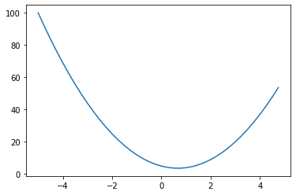
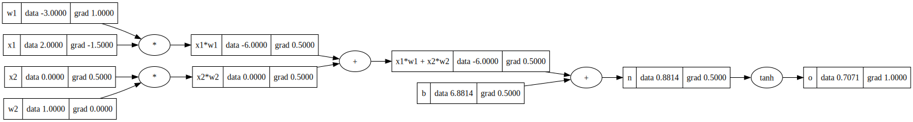
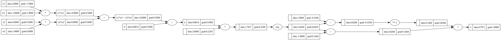

import math
import random
import numpy as np
import matplotlib.pyplot as pltmicrograd - part 2
def f(x):
return 3*x**2 - 4*x + 5f(3.0)20.0xs = np.arange(-5, 5, 0.25)
ys = f(xs)
plt.plot(xs, ys)
h = 0.000001
x = 2/3
(f(x + h) - f(x))/h2.999378523327323e-06# les get more complex
a = 2.0
b = -3.0
c = 10.0
d = a*b + c
print(d)4.0h = 0.0001
# inputs
a = 2.0
b = -3.0
c = 10.0
d1 = a*b + c
c += h
d2 = a*b + c
print('d1', d1)
print('d2', d2)
print('slope', (d2 - d1)/h)d1 4.0
d2 4.0001
slope 0.9999999999976694class Value:
def __init__(self, data, _children=(), _op='', label=''):
self.data = data
self.grad = 0.0
self._backward = lambda: None
self._prev = set(_children)
self._op = _op
self.label = label
def __repr__(self):
return f"Value(data={self.data})"
def __add__(self, other):
other = other if isinstance(other, Value) else Value(other)
out = Value(self.data + other.data, (self, other), '+')
def _backward():
self.grad += 1.0 * out.grad
other.grad += 1.0 * out.grad
out._backward = _backward
return out
def __mul__(self, other):
other = other if isinstance(other, Value) else Value(other)
out = Value(self.data * other.data, (self, other), '*')
def _backward():
self.grad += other.data * out.grad
other.grad += self.data * out.grad
out._backward = _backward
return out
def __pow__(self, other):
assert isinstance(other, (int, float)), "only supporting int/float powers for now"
out = Value(self.data**other, (self,), f'**{other}')
def _backward():
self.grad += other * (self.data ** (other - 1)) * out.grad
out._backward = _backward
return out
def __rmul__(self, other): # other * self
return self * other
def __truediv__(self, other): # self / other
return self * other**-1
def __neg__(self): # -self
return self * -1
def __sub__(self, other): # self - other
return self + (-other)
def __radd__(self, other): # other + self
return self + other
def tanh(self):
x = self.data
t = (math.exp(2*x) - 1)/(math.exp(2*x) + 1)
out = Value(t, (self, ), 'tanh')
def _backward():
self.grad += (1 - t**2) * out.grad
out._backward = _backward
return out
def exp(self):
x = self.data
out = Value(math.exp(x), (self, ), 'exp')
def _backward():
self.grad += out.data * out.grad # NOTE: in the video I incorrectly used = instead of +=. Fixed here.
out._backward = _backward
return out
def backward(self):
topo = []
visited = set()
def build_topo(v):
if v not in visited:
visited.add(v)
for child in v._prev:
build_topo(child)
topo.append(v)
build_topo(self)
self.grad = 1.0
for node in reversed(topo):
node._backward()from graphviz import Digraph
def trace(root):
# builds a set of all nodes and edges in a graph
nodes, edges = set(), set()
def build(v):
if v not in nodes:
nodes.add(v)
for child in v._prev:
edges.add((child, v))
build(child)
build(root)
return nodes, edges
def draw_dot(root):
dot = Digraph(format='svg', graph_attr={'rankdir': 'LR'}) # LR = left to right
nodes, edges = trace(root)
for n in nodes:
uid = str(id(n))
# for any value in the graph, create a rectangular ('record') node for it
dot.node(name = uid, label = "{ %s | data %.4f | grad %.4f }" % (n.label, n.data, n.grad), shape='record')
if n._op:
# if this value is a result of some operation, create an op node for it
dot.node(name = uid + n._op, label = n._op)
# and connect this node to it
dot.edge(uid + n._op, uid)
for n1, n2 in edges:
# connect n1 to the op node of n2
dot.edge(str(id(n1)), str(id(n2)) + n2._op)
return dot# inputs x1,x2
x1 = Value(2.0, label='x1')
x2 = Value(0.0, label='x2')
# weights w1,w2
w1 = Value(-3.0, label='w1')
w2 = Value(1.0, label='w2')
# bias of the neuron
b = Value(6.8813735870195432, label='b')
# x1*w1 + x2*w2 + b
x1w1 = x1*w1; x1w1.label = 'x1*w1'
x2w2 = x2*w2; x2w2.label = 'x2*w2'
x1w1x2w2 = x1w1 + x2w2; x1w1x2w2.label = 'x1*w1 + x2*w2'
n = x1w1x2w2 + b; n.label = 'n'
o = n.tanh(); o.label = 'o'
o.backward()draw_dot(o)
# inputs x1,x2
x1 = Value(2.0, label='x1')
x2 = Value(0.0, label='x2')
# weights w1,w2
w1 = Value(-3.0, label='w1')
w2 = Value(1.0, label='w2')
# bias of the neuron
b = Value(6.8813735870195432, label='b')
# x1*w1 + x2*w2 + b
x1w1 = x1*w1; x1w1.label = 'x1*w1'
x2w2 = x2*w2; x2w2.label = 'x2*w2'
x1w1x2w2 = x1w1 + x2w2; x1w1x2w2.label = 'x1*w1 + x2*w2'
n = x1w1x2w2 + b; n.label = 'n'
# ----
e = (2*n).exp()
o = (e - 1) / (e + 1)
# ----
o.label = 'o'
o.backward()
draw_dot(o)
import torchx1 = torch.Tensor([2.0]).double() ; x1.requires_grad = True
x2 = torch.Tensor([0.0]).double() ; x2.requires_grad = True
w1 = torch.Tensor([-3.0]).double() ; w1.requires_grad = True
w2 = torch.Tensor([1.0]).double() ; w2.requires_grad = True
b = torch.Tensor([6.8813735870195432]).double() ; b.requires_grad = True
n = x1*w1 + x2*w2 + b
o = torch.tanh(n)
print(o.data.item())
o.backward()
print('---')
print('x2', x2.grad.item())
print('w2', w2.grad.item())
print('x1', x1.grad.item())
print('w1', w1.grad.item())0.7071066904050358
---
x2 0.5000001283844369
w2 0.0
x1 -1.5000003851533106
w1 1.0000002567688737class Neuron:
def __init__(self, nin):
self.w = [Value(random.uniform(-1,1)) for _ in range(nin)]
self.b = Value(random.uniform(-1,1))
def __call__(self, x):
# w * x + b
act = sum((wi*xi for wi, xi in zip(self.w, x)), self.b)
out = act.tanh()
return out
def parameters(self):
return self.w + [self.b]
class Layer:
def __init__(self, nin, nout):
self.neurons = [Neuron(nin) for _ in range(nout)]
def __call__(self, x):
outs = [n(x) for n in self.neurons]
return outs[0] if len(outs) == 1 else outs
def parameters(self):
return [p for neuron in self.neurons for p in neuron.parameters()]
class MLP:
def __init__(self, nin, nouts):
sz = [nin] + nouts
self.layers = [Layer(sz[i], sz[i+1]) for i in range(len(nouts))]
def __call__(self, x):
for layer in self.layers:
x = layer(x)
return x
def parameters(self):
return [p for layer in self.layers for p in layer.parameters()]x = [2.0, 3.0, -1.0]
n = MLP(3, [4, 4, 1])
n(x)Value(data=0.40638197915146174)xs = [
[2.0, 3.0, -1.0],
[3.0, -1.0, 0.5],
[0.5, 1.0, 1.0],
[1.0, 1.0, -1.0],
]
ys = [1.0, -1.0, -1.0, 1.0] # desired targetsfor k in range(20):
# forward pass
ypred = [n(x) for x in xs]
loss = sum((yout - ygt)**2 for ygt, yout in zip(ys, ypred))
# backward pass
for p in n.parameters():
p.grad = 0.0
loss.backward()
# update
for p in n.parameters():
p.data += -0.1 * p.grad
print(k, loss.data)0 3.4108119643530888
1 2.7333908126990187
2 2.529685744713404
3 1.5991660472245495
4 1.8519402770590592
5 0.32191773394239787
6 0.037788868223750174
7 0.03252592980059902
8 0.028743826618205327
9 0.02584982329406658
10 0.02353984318126514
11 0.0216396514140169
12 0.020041077243779393
13 0.018672744820048957
14 0.017485253063873017
15 0.01644307646812274
16 0.015519858571980637
17 0.014695534862119995
18 0.01395449758312289
19 0.01328438199165979ypred[Value(data=0.94354238926853),
Value(data=-0.9432664093982158),
Value(data=-0.9493416317799401),
Value(data=0.9343345630573925)]